This document describes XSLT-process, a minor mode for XEmacs/GNU Emacs that enables it for XSLT processing and debugging.
You can download this document in different formats:
XSLT-process is a minor mode for XEmacs or GNU Emacs which transforms it into a powerful XML editor with XSLT processing and debugging capabilities.
You can invoke an XSLT processor of choice on the current XML file you're editing, and see the results in another buffer. In case of errors, the error messages generated by the XSLT processor, are shown in a compilation buffer, which allows you to quickly go to the location of the error.
You can also run the XSLT processor in debugging mode, and view step by step what the XSLT processor is doing. You can view the current stack frame in the XSLT program, the current XML context node being processed, what are the local and global variables, set breakpoints in both the XML source file and the XSLT program.
The author of the XSLT-process package is Ovidiu Predescu, and the package is distributed under the terms of GNU General Public License. The project is graciously hosted by SourceForge, and could be found at http://xslt-process.sourceforge.net/index.php. The current version is 2.1.
The XSLT-process mode is part of XEmacs, but it works with both XEmacs and GNU Emacs. The installation differs slighly between the two editors as we will see shortly.
The mode was tested on Linux and Windows 2000, with XEmacs and GNU Emacs. The development platform however is XEmacs under Linux, so expect this to be the most stable one.
XSLT-process is also released as an XEmacs package, so if you're an XEmacs user, chances are that the package is already installed with your XEmacs installation. If it's not installed, try obtaining the latest XEmacs package from your XEmacs local mirror or from the main XEmacs ftp site. It may happen that the XEmacs package is a little older than the currently released version of XSLT-process, in which case you want to follow the steps described below.
You can retrieve the XEmacs package either manually from the ftp site, or by using the "Options" => "Manage packages" menu. Follow the instructions described under the "Options" => "Manage packages" => "Help" menu entry if you're not familiar with this procedure.
This section describes how to install XSLT-process on your Emacs editor, assuming either it is not already installed, or you want to install a new version.
The XSLT-process package depends on two other packages:
If you're running XEmacs, you don't need to install Elib, as XEmacs by default comes with it.
Elib provides some useful functionality to Emacs, among other things a compatibility layer between GNU Emacs and XEmacs.
To install, download it from ftp://ftp.lysator.liu.se/pub/emacs/elib-1.0.tar.gz, and unpack it into your ~/emacs directory. If you don't have a ~/emacs directory, create one now.
Go to the elib-1.0 directory and run
make |
XSLT-process depends on Speedbar, for displaying breakpoints, stack frames and global and local variables. You need to obtain and install this package first, in case you don't have it already installed.
To verify if you have this package installed, type M-x speedbar-version; this will give either an error, if the package is not installed, or the version number of the speedbar package if it's already installed. You should have at least version 0.13a for XSLT-process to work.
In case you don't have the speedbar package, you can obtain it from its Web site. Unpack the package in your ~/emacs directory. Then go to the speedbar directory and run
$ make |
If you're using XEmacs, you need to run:
$ make EMACS=xemacs |
This step byte-compiles all the Lisp files in the speedbar package using your Emacs editor. Please follow Speedbar's installation document for more up-to-date information on how to compile it.
To install the XSLT-process mode, first obtain the latest stable version from the SourceForge Web site, at http://sourceforge.net/projects/xslt-process/. Unpack the distribution in your ~/emacs directory; this will create the xslt-process-2.1 directory in your ~/emacs directory.
You now need to tell Emacs to look for the new package in this newly created directory. You do this by adding the following lines in the Emacs configuration file ~/.emacs (if you don't have such a file, create one now):
(mapc (lambda (x)
(pushnew (expand-file-name x) load-path))
(list "~/emacs"
"~/emacs/xslt-process-2.1/lisp"
"~/emacs/elib-1.0"
"~/emacs/speedbar-0.13a"))
|
You can remove the reference to elib-1.0 or speedbar-0.13 in the lines above, if you didn't have to install either elib or speedbar as described in the previous sections.
XSLT-process is an Emacs minor mode, which means is extending the functionality of whatever mode you use for editing XML or XSLT files, instead of creating a similar one.
XSLT-process does not try to help in the editing of XML or XSLT files, it just enables Emacs to process such files. Thus XSLT-process should work with any XML/XSLT editing mode your Emacs is configured for.
XSLT-process was tested with both Lennart Staflin's PSGML major mode and James Clark's sgml-mode.el major mode (distributed with GNU Emacs) for editing XML files. It also works with Tony Graham's xslide XSLT editing mode.
To automatically enable the XSLT-process minor mode for the above major modes, add the following lines in your ~/.emacs file:
(autoload 'xslt-process-mode "xslt-process" "Emacs XSLT processing" t) (autoload 'xslt-process-install-docbook "xslt-process" "Register the DocBook package with XSLT-process" t) (add-hook 'sgml-mode-hook 'xslt-process-mode) (add-hook 'xml-mode-hook 'xslt-process-mode) (add-hook 'xsl-mode-hook 'xslt-process-mode) (defadvice xml-mode (after run-xml-mode-hooks act) "Invoke `xml-mode-hook' hooks in the XML mode." (run-hooks 'xml-mode-hook)) |
You can also manually switch to this minor mode by typing M-x xslt-process-mode.
You can check the modeline to see whether Emacs is in the XSLT-process mode. Look for the "XSLT" indicator in the modeline.
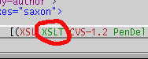
The XSLT-process mode comes by default with two different Java XSLT processors, Saxon and Xalan. These particular versions of the XSLT processors were tested and work with the XSLT-process mode. Different versions of the processors may not work with the XSLT-process mode.
You can choose either of the above processors to do the XSLT processing by selecting one from the "XSLT" => "XSLT Processor" menu. The default XSLT processor is Saxon.
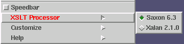
The main functionality of the XSLT-process mode is to allow you to edit an XML document, apply an XSLT stylesheet on the document, and view the results either in a buffer or in Web browser.
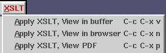
To run the XSLT processor and view the results in another Emacs buffer, you can enter C-c C-x v, while editing the XML document.
If your stylesheet generates HTML as the result, you can view the results directly in a Web browser by typing C-c C-x n. If your stylesheet generates XML FO as output, XSLT-process can translate it to PDF automatically using the Apache FOP processor. In this case just type C-c C-x p and XSLT-process will take care of applying the XSLT stylesheet on your input XML document, and applying the FOP processor on the resulting XML FO document.
You can customize the Web browser and PDF viewer to be used as described in 5. Customizing the XSLT-process mode. If you don't like the default key bindings described above, you can also customize them as described in the same chapter.
If you choose to view the results in a buffer, they will be shown in the
*xslt results* buffer. If any message are generated during the
XSLT processing, they are show separately in the *xslt messages*.
The XSLT-process mode intercepts the error messages generated by the XML parser or XSLT processor and displays them in compilation buffer, which quickly allows you to go to the cause of the error.
When you encounter an error, just click using the middle-button (assuming an X-Windows system) on the error message. Emacs will move the cursor point at the place that caused the error.
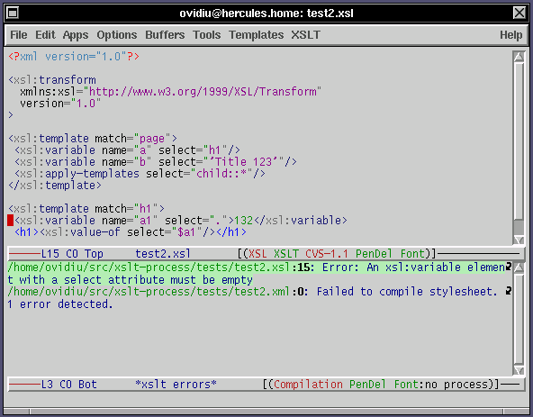
There are two ways to specify a stylesheet to be used to process an XML file. The first method uses the so-called `associated stylesheet', a XML specific feature, which is specified inside the XML file. The second method is external to the XML, and is specific to the XSLT-process mode.
The XSLT file that's used to process the file should be specified inside the XML file using the XML processing instruction `xml-stylesheet', like this:
<?xml version="1.0"?> <?xml-stylesheet href="URL/to/XSLT/file" type="text/xsl"?> ... |
You can use any URI understood by your Java system, e.g. file, HTTP or FTP, to refer to a stylesheet. The XSLT engine will download the stylesheet from the remote location and make use of it locally. The XSLT processing code of XSLT-process is written such that the stylesheet is cached, so further invocations won't parse the stylesheet again, unless the stylesheet is modified.
You can use URLs which are relative to the location of your XML file. For example if you have an XSLT file `page-html.xsl' in the same directory as the XML file you can simply have inside the XML file the following processing instruction:
<?xml version="1.0"?> <?xml-stylesheet href="page-html.xsl" type="text/xsl"?> ... |
Using the associated stylesheet in the XML document requires the XML
document to have a xml-processing pseudo-instruction. This is not
always convenient, so XSLT-process provides a way to associate
XSLT stylesheets with XML documents.
The stylesheet registry functionality can be found in the menu under "XSLT" => "Stylesheet Registry".
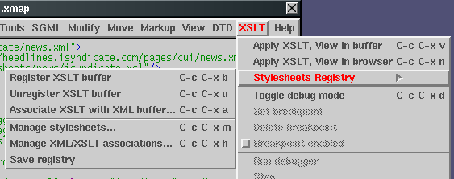
Associating an XSLT stylesheet with and XML document requires the following steps:
To register a stylesheet in the registry, type C-c C-x b. This will prompt you for the buffer name visiting the XSLT stylesheet. Select the buffer visiting the XSLT stylesheet you want; you can type TAB TAB for a list of buffers.
If you already have an association between the XML document and an XSLT
stylesheet, it will be selected. If there is no association already
established, the default is setup to use the associated stylesheet
specified with the xml-stylesheet pseudo-instruction. There is no
check being done to ensure you have such an instruction.
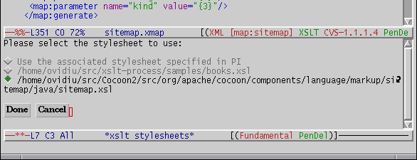
To remove or add new XSLT stylesheets, you can type C-c C-x m. This will present you a buffer that allows you to remove existing stylesheets, or to manually add new ones. Adding new ones may be easier though by visiting the file in a buffer, and typing C-c C-x b.
Managing the associations between XML documents and XSLT stylesheets is done in a similar way. Just type C-c C-x h, and you'll get a buffer that shows you all the currently registered associations.
If you want to persist the registry across multiple invocations of Emacs, you need to save it. You can do this from "XSLT" => "Stylesheet Registry" => "Save registry".
If you want to experiment what are the results of applying your stylesheets using different XSLT processors, you can change the processor using the menu "XSLT" => "XSLT Processor". If you are in the middle of a debugging session, this action will not have effect until the session is finished.
In certain cases, there are XSLT stylesheets that works only when processed through a particular XSLT processor. This may happen because the stylesheet is using XSLT extensions specific to a particular processor. In this case you can specify the XSLT processor to be used in the XML source document (see 6. Known problems and limitations).
Just add a Local Variables section at the end of your XML file and specify within it what should be the XSLT processor to be invoked using the `processor' variable. For example, by adding the following section at the end of your file, you specify Saxon to be used as the XSLT processor, no matter what is the global XSLT processor setting:
<!-- Local Variables: processor: Saxon End: --> |
In this release, the acceptable values for `processor' are `Saxon' and `Xalan', as they are the only supported processors. By replacing the value of `processor', you can run any of the supported processors on your file.
For relatively simple XSLT stylesheets, understanding how a particular stylesheet works can be done by repeteadly running the XSLT processor, and looking at the results. More complex stylesheets however, are difficult to debug this way, especially when you have lots of XSL variables and key indices.
XSLT-process gives you the ability to run the processor in debugging mode, which allows you to set breakpoints, run step by step, view local and global XSLT variables.
Note: This release supports debugging only with the Saxon XSLT processor. Xalan requires line number support for the XML source document; I have a patch for the 2.1.0 release, but I'm told the Stree tree model this release uses is going away in the next release. So I started to work on a patch for the new release which uses the so-called DTM tree model.
While you're editing an XML or XSLT file, the buffer visiting the file is read-write, allowing you to perform the normal editing operations, and use the functionality specific to the XML/XSLT/SGML mode you're using.
The XSLT debugging mode however does not allow you to modify files, and it binds some of the keys to debugger specific functionality. The XSLT debugging functionality is a per buffer feature, you can enable and disable it for each buffer independently.
To toggle the XSLT debugging functionality, type C-c C-x d while you're in a XSLT-process mode buffer. You can also toggle the debug mode through the menu at "XSLT" => "Toggle debug mode". Once you enter the debug mode, you will notice the modeline indicator changes from "XSLT" to "XSLTd".
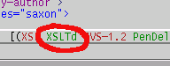
In the menu, you will observe that until the debug functionality is not enabled, all the debugger related operations in the menu are disabled. Once you enable the debug mode, you will be able to setup breakpoints and run the XSLT debugger.
| 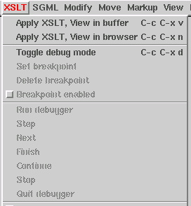 | 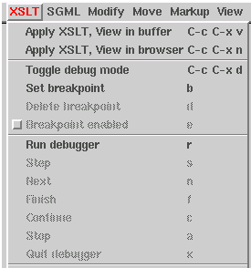 |
| No debug menu: the debugging functionality is not enabled. | XSLT debug menu: debugging functionality enabled. |
Once you're in the XSLT debugging mode, you can set or delete, enable or disable breakpoints. During the execution of the XSLT stylesheet, the XSLT processor will stop when it reaches a breakpoint that is enabled.
The keybindings for breakpoints are:
The corresponding menu item is disabled if the point is on a line where a breakpoint is already set.
The corresponding menu item is disabled if the point is on a line where there is no breakpoint.
The corresponding menu item is disabled if the point is on a line where there is no breakpoint.
The enabled and disabled breakpoints are shown with distinctive colors, so you can easily identify them.
You can setup breakpoints both in the source XML document, and in the XSLT stylesheet program. Note however that the semantic of a breakpoint in the source document is very different from a breakpoint in the XSLT stylesheet. The XSLT processor will stop at a breakpoint in the source document only when an element on that line is selected, e.g. when the element becomes the current context node (see the XSLT specification). Compare this with the XSLT stylesheet, which is essentially a program, and where the stop at a breakpoint means that the execution of the program reached the instruction at that line.
After you setup the breakpoints where you would like the XSLT processor to stop, you can start the XSLT processing. You can do this from the menu at "XSLT" => "Run debugger", or by typing r.
Important: When starting the debugger, the buffer containing the XML source document should be current. If a buffer containing an XSLT document is active instead, the XSLT-process mode assumes this as the source document, and will not be able to find the associated stylesheet.
The XSLT processor will start and it will continue running in the background until the execution reaches an enabled breakpoint.
In this moment, Emacs will highlight the line where the XSLT processor has stopped, and it will wait for an action to be taken. The possible actions are:
If the XSLT processor stopped when it was exiting from an XML element, this action will make the processor exit from the current element, and stop on the immediatelly following element.
This is equivalent with the step into action of debuggers for traditional programming languages.
This is equivalent with the step over action of debuggers for traditional languages.
This is equivalent with the finish action of traditional debuggers.
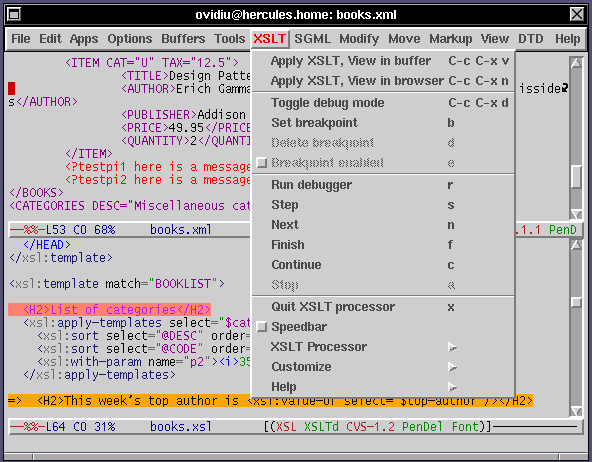
The speedbar is a separate Emacs window that allows you to:
Clicking on a breakpoint entry in the speedbar will move the point to the file and line where the breakpoint is set. If the file is not currently opened within Emacs, it will open and shown in a buffer.
Whenever you click with the middle button on such a entry, the point is positioned in the file and line where the source element starts.
Clicking with the middle button on such a node will position the point in the file at line where the element starts.
xsl:variable or
xsl:param.
Each entry for a variable has a little icon showing the type of the variable, its name and value. If images are not supported by your Emacs (GNU Emacs 20.x and lower), a text indication of the type is shown instead.
Below are all the possible XSLT types and how they are displayed by speedbar:
boolean - The text representation of an XSLT boolean is {b}.
number - The text representation of an XSLT number is {n}.
string - The text representation of an XSLT string is {s}.
nodeset or document fragment - The text representation of this type is {t}.
object - The text representation of Java object is {o}.
any - This is an unknown XSLT type; its text representation is {a}.
Here is a picture of the speedbar in the XSLT-process mode:
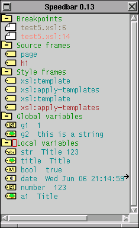
You can customize the XSLT-process mode in a number of ways. There are several groups of customizations you can do:
You can find all the above customization options under the main menu, in
"XSLT" => "Customize". Alternatively, you can run M-x
customize-group RET xslt-process to get to the main customization page
for XSLT-process.
The following is a list of differences between GNU Emacs and XEmacs. As the XSLT-process mode is developed under XEmacs, I would appreciate your support in making the GNU Emacs version behave closer to the XEmacs one.
This will change when XSLT-process has support for registering XSLT stylesheets with it, instead of having them associated with the XML source document through a `xml-stylesheet' processing instruction (see 7. Future enhancements).
This is a list of features planned for future releases. The list doesn't specify any particular order in the priority, and the features may or may not be implemented.
The per XML document or XSLT stylesheet parameters can be specified using the Local Variables section in file, the same way as the XSLT processor could be temporarily changed per file.
This would be a very useful tool for novice XSLT users to learn XPath (and Emacs ;-).
These are the changes since the 2.0 release:
These are the changes since the 1.2.2 release:
These are the changes since the 1.2 release:
This is the list of changes since the 1.1 release.
This is the list of changes since the 1.0 release.
This document was generated by Ovidiu Predescu on August, 20 2001 using texi2html